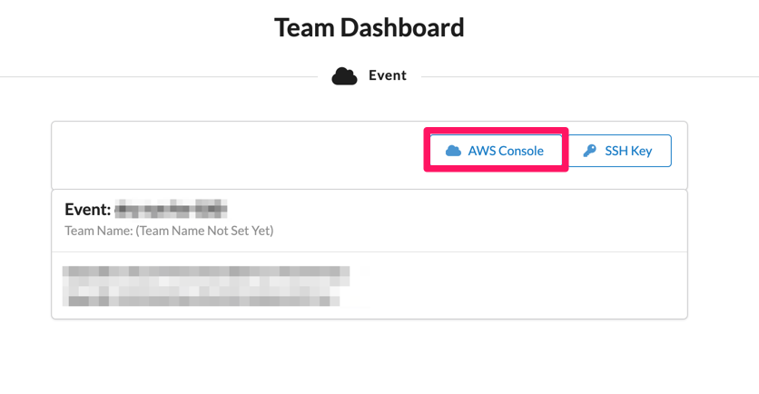

原系统验证测试
登录Cloudfront查看Game Day 的原应用系统
1,在您的任意浏览器输出访问output的URL，这是一个Cloudfront地址，后面连接至Apache Web服务器，您可以通过该域名访问原有系统，例如https://dirjlcj2zs8i9.cloudfront.net/sample-webapp/
2,输入您的在cloudformation启动时自定义的密码，如果您没有进行模板的改动，默认用户名密码为admin/admin，点击登录后获得以下界面

使用原系统的应用功能
3,完成登录后您可以看到示例的联系人管理界面。

4,请使用Add New Contact创建任意联系人，操作将被写入直MySQL数据库中

5,您可以完成任意联系人的增删改查操作，这些前端操作会映射为Tomcat对数据库的增删改查
6,您可以在浏览器中打开新的窗口页面，重新进入联系人系统，如您cloudformation输出的cloudfront地址，例如https://dirjlcj2zs8i9.cloudfront.net/sample-webapp/
您会观察到您无需再次登录，因为后台的Redis保持了你的登录状态。
登录原系统服务器后台查看相关组件
回到您的EventEngine界面，按在此下载您的SSH秘钥(如果您已下载请找到并导航至您下载好的秘钥文件路径)。 
登录堡垒机实例
方法1，使用putty等linux工具连接到EC2
您可以为您的Windows电脑下载putty ,随后打开putty，指定pem文件，配置服务器用户名，公网DNS地址

-
Host Name (主机名) 框中，输入 主机DNS或者公网IP地址
-
Amazon Linux AMI，用户名称是 ec2-user
-
端口： 22
-
在 Category (类别) 窗格中，展开 Connection (连接)，再展开 SSH，然后选择 Auth (身份验证)。完成以下操作：
-
单击 Browse (浏览)。选择您的 .ppk 或 .pem 文件，然后单击 Open (打开)。既是您的
EventEngine界面下载的秘钥文件 -
如果这是您第一次连接到此实例，PuTTY 会显示安全警告对话框，询问您是否信任您要连接到的主机。请单击Yes
方法2，使用AWS 的 SSM 工具链接
点击， 确认你的EC2是否具有对应的ssm 角色
在左侧的控制台导航菜单选择EC2 Dashboard（EC2控制面板）
首先在控制台中上方搜索栏搜索 EC2，并从结果列表中选中此服务。然后选中对应的EC2，点击操作按钮，安全，编辑IAM角色。
 如果已经有对应的SSM角色，则说明有SSM连接的权限。
如果已经有对应的SSM角色，则说明有SSM连接的权限。

点击连接按钮，
 选择会话管理器session manager，点击连接，进入这台EC2的操作系统命令行界面
选择会话管理器session manager，点击连接，进入这台EC2的操作系统命令行界面

通过堡垒机实例连接至后端服务器
使用SCP 命令 将您的秘钥传输到堡垒机，导航至您的秘钥文件路径，键入如下命令
scp -i ee-default-keypair.pem ./ee-default-keypair.pem ec2-user@<$your-Bastion-dns>:/home/ec2-user/
其中 ee-default-keypair.pem替换为您秘钥的文件名，your-Bastion-dns替换为您的堡垒机公网DNS地址。

- 示例中的
jiade.pem是秘钥文件
登录至堡垒机，验证您SCP传输进来的秘钥文件。您只有通过堡垒机才可以链接到后端的服务器

在堡垒机上为秘钥授权，以便您能登录至后端服务器，请在堡垒机Home/ec2-user/路径下，键入如下命令
chmod 600 ee-default-keypair.pem
其中 ee-default-keypair.pem替换为您秘钥的文件名
验证mysql服务
现在您可以在堡垒机上登录到后端任意机器，例如登录到mysql服务器，您记录下mysql的Private IP DNS name如下图所示

在堡垒机上使用ssh命令登录后端机器，输入
chmod 600 ee-default-keypair.pem@ec2-user@<your-mysql-Private-name>
其中 ee-default-keypair.pem替换为您秘钥的文件名，<your-mysql-Private-name>替换为您在控制塔查看的mysql的Private IP DNS name,输入yes以便确定连接

在Mysql上使用mysql连接至数据库，输入
mysql -u graviton -p
其中 graviton是模板中默认的数据库用户名，如果您自定义了该参数请调整为您自定义的值
随后mysql会要求我们输入密码，请复制GravitonGameDay@2022进行输入，这是模板中默认的数据库密码，如果您自定义了该参数请调整为您自定义的值
GravitonGameDay@2022

在mysql数据库中您可以查看我们当前的数据库，查看数据库中的表，您可以使用以下命令,如
show databases;
/use webappdb;/
show tables;
/select * from users;
mysql> show databases;
+--------------------+
| Database |
+--------------------+
| information_schema |
| mysql |
| performance_schema |
| sys |
| webappdb |
+--------------------+
5 rows in set (0.00 sec)
mysql> use webappdb;
Reading table information for completion of table and column names
You can turn off this feature to get a quicker startup with -A
Database changed
mysql> show tables;
+--------------------+
| Tables_in_webappdb |
+--------------------+
| user_account_roles |
| user_accounts |
| users |
+--------------------+
3 rows in set (0.00 sec)
mysql> select * from users;
Empty set (0.00 sec)
mysql> select * from users;
+----+----------+------------------+---------------+
| id | name | email | company |
+----+----------+------------------+---------------+
| 5 | demo | demo@aws.com | 18618191816 |
| 6 | Wu-JiaDe | wjiad@amazon.com | 198 |
| 7 | gameday | asd@xxx.com | 9982-9983-221 |
+----+----------+------------------+---------------+
3 rows in set (0.00 sec)
在数据库中，您可以通过exit命令回到数据库服务器中，在数据库服务器中，您可以再次通过exit命令回到您的堡垒机。通过ls查看您的key文件以确定您现在是在堡垒机上
mysql> exit
Bye
[ec2-user@ip-10-0-2-12 ~]$ exit
登出
Connection to ip-10-0-2-12.ec2.internal closed.
[ec2-user@ip-10-0-0-210 ~]$ ls
code code.tar.gz config get-stack-ip-addresses.py jiade.pem outputurl stack-info.json
[ec2-user@ip-10-0-0-210 ~]$
验证 redis 服务
现在我们尝试登录到redis服务器，您记录下redis的Private IP DNS name如下图所示

在堡垒机上使用ssh命令登录后端机器，输入
chmod 600 ee-default-keypair.pem@ec2-user@<your-redis-Private-name>
其中 ee-default-keypair.pem替换为您秘钥的文件名，<your-redis-Private-name>替换为您在控制塔查看的redis的Private IP DNS name,输入yes以便确定连接

在redis机器上您可以通过redis-cli命令打开redis客户端，里面保持着您的用户登录状态,请使用如下命令登录redis客户端
./redis-6.0.9/src/redis-cli -h ip-10-0-3-134.ec2.internal
其中ip-10-0-3-134.ec2.internal请替换为您自己的redis服务器Private IP DNS name，随后您可以使用命令查看redis中的数据，例如keys * / HGETALL "redisson:tomcat_session:xxxxxxxxx"
[ec2-user@ip-10-0-3-134 ~]$
[ec2-user@ip-10-0-3-134 ~]$ ./redis-6.0.9/src/redis-cli -h ip-10-0-3-134.ec2.internal
ip-10-0-3-134.ec2.internal:6379> keys *
1) "redisson:tomcat_session:31C777EB4C99DFB418980B8D25AA9037"
ip-10-0-3-134.ec2.internal:6379>
ip-10-0-3-134.ec2.internal:6379> HGETALL "redisson:tomcat_session:31C777EB4C99DFB418980B8D25AA9037"
1) "session:principal"
2) "\x04\x04\t>@org.apache.catalina.realm.GenericPrincipal$SerializablePrincipal\x00\x00\x00\x00\x00\x00\x00\x01\x00\x00\x00\x04>\x04name\x16\x00>\bpassword\x16\x00>\tprincipal\x16\x00>\x05roles\x16\x00\x16>\x05admin>\x05admin\x01B\x01\x14>\bstandard"
3) "session:maxInactiveInterval"
4) "\x04K\x00\x00\a\b"
5) "session:authtype"
6) "\x04>\x04FORM"
7) "session:creationTime"
8) "\x04L\x00\x00\x01\x83\x0c\x9f\xf3\x80"
9) "session:isNew"
10) "\x04Q"
11) "session:isValid"
12) "\x04P"
13) "session:thisAccessedTime"
14) "\x04L\x00\x00\x01\x83\x0c\xa1\x12\xdc"
15) "session:lastAccessedTime"
16) "\x04L\x00\x00\x01\x83\x0c\xa1\x12\xdc"
ip-10-0-3-134.ec2.internal:6379>
您可以通过exit命令回到redis服务器中，在redis服务器中，您可以再次通过exit命令回到您的堡垒机。通过ls查看您的key文件以确定您现在是在堡垒机上
验证 Tomcat 的 Java 服务
查看并记录您Tomcat服务的地址，回到控制台，查看命名为Graviton_GameDay_App1的实例

回到堡垒机上使用ssh命令登录后端机器，输入
chmod 600 ee-default-keypair.pem@ec2-user@<your-tomcat-Private-name>
在Tomcat机器上，您可以切换到root用户，并通过systemctl status tomcat命令查看tomcat的状态
[ec2-user@ip-10-0-0-210 ~]$ ssh -i jiade.pem ec2-user@ip-10-0-3-138.ec2.internal
Last login: Sat Sep 3 00:29:37 2022 from ip-10-0-0-210.ec2.internal
__| __|_ )
_| ( / Amazon Linux 2 AMI
___|\___|___|
https://aws.amazon.com/amazon-linux-2/
[ec2-user@ip-10-0-3-138 ~]$ sudo su
[root@ip-10-0-3-138 ec2-user]# sudo systemctl status tomcat
● tomcat.service - Tomcat Application Server
Loaded: loaded (/etc/systemd/system/tomcat.service; enabled; vendor preset: disabled)
Active: active (running) since 六 2022-09-03 00:35:48 UTC; 2 days ago
Process: 22722 ExecStop=/usr/share/tomcat/bin/shutdown.sh (code=exited, status=0/SUCCESS)
Process: 22774 ExecStart=/usr/share/tomcat/bin/startup.sh (code=exited, status=0/SUCCESS)
Main PID: 22782 (java)
CGroup: /system.slice/tomcat.service
└─22782 /usr/lib/jvm/jre/bin/java -Djava.util.logging.config.file=/usr/share/tomcat/conf/logging.properties -Djava.util.logging.manager=org.apache.juli.ClassLoaderLogManager -Djava.awt.headless=true -Djdk.tls.ephemeralDHKey...
9月 03 00:35:48 ip-10-0-3-138.ec2.internal systemd[1]: Starting Tomcat Application Server...
9月 03 00:35:48 ip-10-0-3-138.ec2.internal startup.sh[22774]: Tomcat started.
9月 03 00:35:48 ip-10-0-3-138.ec2.internal systemd[1]: Started Tomcat Application Server.
您还可以使用cat /usr/share/tomcat/logs/catalina.out 命令查看tomcat的日志，这儿往往是排错/查看应用操作记录的秘诀
[root@ip-10-0-3-138 ec2-user]# cat /usr/share/tomcat/logs/catalina.out
······
com.mysql.jdbc.JDBC42PreparedStatement@542007f1: select * from users
com.mysql.jdbc.JDBC42PreparedStatement@1117a60a: select * from users
com.mysql.jdbc.JDBC42PreparedStatement@47676566: select * from users
05-Sep-2022 07:49:12.702 INFO [http-nio-8080-exec-6] org.redisson.tomcat.RedissonSessionManager.findSession Session F3F716043C0CDE3B1B63D2E116EBC925 can't be found
05-Sep-2022 07:49:12.703 INFO [http-nio-8080-exec-6] org.redisson.tomcat.RedissonSessionManager.findSession Session F3F716043C0CDE3B1B63D2E116EBC925 can't be found
05-Sep-2022 07:49:12.703 INFO [http-nio-8080-exec-6] org.redisson.tomcat.RedissonSessionManager.findSession Session F3F716043C0CDE3B1B63D2E116EBC925 can't be found
05-Sep-2022 07:49:12.704 INFO [http-nio-8080-exec-6] org.redisson.tomcat.RedissonSessionManager.findSession Session F3F716043C0CDE3B1B63D2E116EBC925 can't be found
com.mysql.jdbc.JDBC42PreparedStatement@2a8e2c84: select * from users
INSERT INTO users (name, email, company) VALUES (?, ?, ?);
com.mysql.jdbc.JDBC42PreparedStatement@2b3ce02: INSERT INTO users (name, email, company) VALUES ('demo', 'demo@aws.com', '18618191816');
com.mysql.jdbc.JDBC42PreparedStatement@771bd510: select * from users
INSERT INTO users (name, email, company) VALUES (?, ?, ?);
com.mysql.jdbc.JDBC42PreparedStatement@16de25a0: INSERT INTO users (name, email, company) VALUES ('Wu-JiaDe', 'wjiad@amazon.com', '198');
com.mysql.jdbc.JDBC42PreparedStatement@1b0c0532: select * from users
INSERT INTO users (name, email, company) VALUES (?, ?, ?);
com.mysql.jdbc.JDBC42PreparedStatement@6547a469: INSERT INTO users (name, email, company) VALUES ('gameday', 'asd@xxx.com', '9982-9983-221');
com.mysql.jdbc.JDBC42PreparedStatement@10ffdbc7: select * from users
一些关于tomcat重要的配置信息被放在/usr/share/tomcat/conf/路径下
例如/usr/share/tomcat/conf/context.xml 存放了mysql数据库的配置信息
例如/usr/share/tomcat/conf/server.xml存放了tomcat服务端口，连接数量等配置
例如/usr/share/tomcat/conf/redisson.yaml存放了redis数据库的配置信息
您可以通过cat 或者 vim 等命令去查看以上配置文件已做了解，这会在后面的迁移和性能测试环节有重大价值
而/usr/share/tomcat/lib/存放了原始应用会引用到的java插件包
验证 Apache HTTPServer web服务
查看并记录您Apache服务的地址，回到控制台，查看命名为Graviton_GameDay_Web1的实例

回到堡垒机上使用ssh命令登录后端机器，输入
chmod 600 ee-default-keypair.pem@ec2-user@<your-Apache-Private-name>
[ec2-user@ip-10-0-0-210 ~]$ ssh -i jiade.pem ec2-user@ip-10-0-0-163.ec2.internal
The authenticity of host 'ip-10-0-0-163.ec2.internal (10.0.0.163)' can't be established.
ECDSA key fingerprint is SHA256:EA/hXytzrdE2SYxQXscxW0lFOxUl61koLiboMzFEJSg.
ECDSA key fingerprint is MD5:a8:8f:78:e1:e9:98:56:c1:2c:a1:ef:fc:09:e6:7b:07.
Are you sure you want to continue connecting (yes/no)? yes
Warning: Permanently added 'ip-10-0-0-163.ec2.internal,10.0.0.163' (ECDSA) to the list of known hosts.
__| __|_ )
_| ( / Amazon Linux 2 AMI
___|\___|___|
https://aws.amazon.com/amazon-linux-2/
[ec2-user@ip-10-0-0-163 ~]$
在Apache机器上，您可以切换到root用户，并通过systemctl status httpd.service命令查看Apache的状态
[ec2-user@ip-10-0-0-163 ~]$ systemctl status httpd.service
● httpd.service - The Apache HTTP Server
Loaded: loaded (/usr/lib/systemd/system/httpd.service; enabled; vendor preset: disabled)
Active: active (running) since 六 2022-09-03 00:02:09 UTC; 2 days ago
Docs: man:httpd.service(8)
Process: 15632 ExecReload=/usr/sbin/httpd $OPTIONS -k graceful (code=exited, status=0/SUCCESS)
Main PID: 2137 (httpd)
Status: "Total requests: 479; Idle/Busy workers 100/0;Requests/sec: 0.00234; Bytes served/sec: 12 B/sec"
CGroup: /system.slice/httpd.service
├─ 2137 /usr/sbin/httpd -DFOREGROUND
├─15633 /usr/sbin/httpd -DFOREGROUND
├─15635 /usr/sbin/httpd -DFOREGROUND
├─15640 /usr/sbin/httpd -DFOREGROUND
├─15642 /usr/sbin/httpd -DFOREGROUND
├─15647 /usr/sbin/httpd -DFOREGROUND
├─15932 /usr/sbin/httpd -DFOREGROUND
├─17687 /usr/sbin/httpd -DFOREGROUND
├─17893 /usr/sbin/httpd -DFOREGROUND
├─21182 /usr/sbin/httpd -DFOREGROUND
└─25538 /usr/sbin/httpd -DFOREGROUND
9月 03 00:02:09 ip-10-0-0-163.ec2.internal systemd[1]: Starting The Apache HTTP Server...
9月 03 00:02:09 ip-10-0-0-163.ec2.internal systemd[1]: Started The Apache HTTP Server.
9月 04 03:25:01 ip-10-0-0-163.ec2.internal systemd[1]: Reloading The Apache HTTP Server.
9月 04 03:25:01 ip-10-0-0-163.ec2.internal systemd[1]: Reloaded The Apache HTTP Server.
关于Apache重要的配置信息被放在/etc/httpd/conf/路径下
例如/etc/httpd/conf/httpd.conf 存放了Apache的配置信息
您可以通过cat 或者 vim 等命令去查看以上配置文件已做了解，这会在后面的迁移和性能测试环节有重大价值
至此。您完成了Game Day 原始环境的验证，并对整个架构完成理解